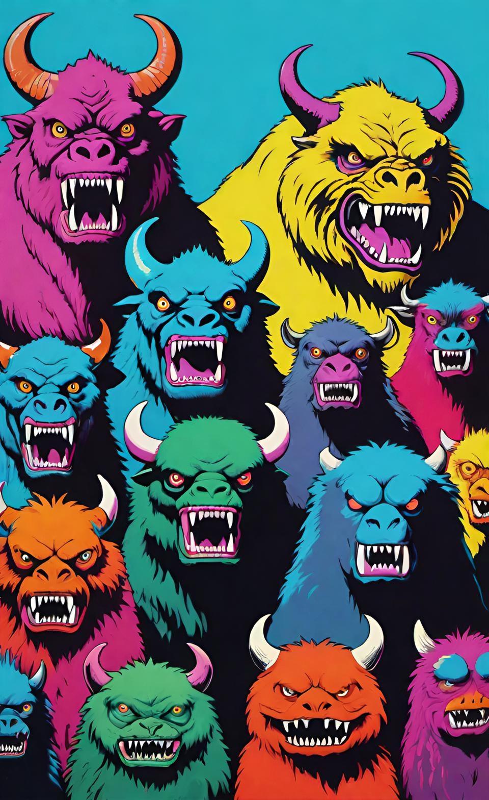
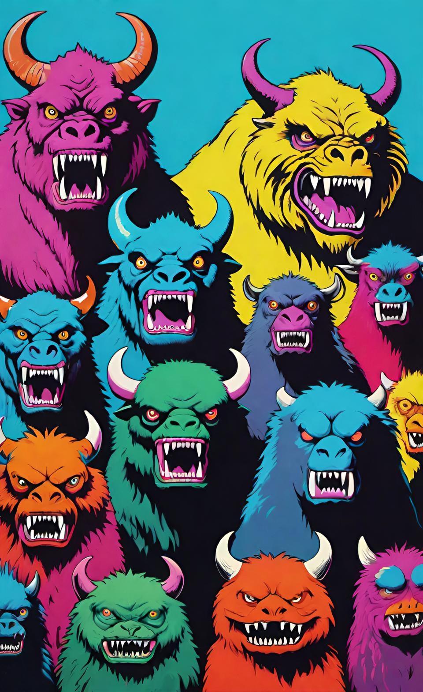

PREV NEXT
Dragon Turtle
Type: undefined
Temper: undefined
Number appearing: 0
Combat Pool: 0
Hit Points: 0
Attack Rank: 0
Defense Rank: 0
Damage Reduction: 0
The Monsters & Creatures Compendium Any (no source link)
Dracopedia Bestiary: An Artist's Guide Any original/official source
The Monsters Know What They're Doing Dungeons And Dragons original/official source
Angry Golem (web) D&D 5e original/official source
Atlas Animalia Any original/official source
Pathfinder 1e Bestiary 1 Pathfinder original/official source
Pathfinder 2e Bestiary 1 Pathfinder original/official source
Monster Manual D&D 5e original/official source
Fizban's Treasury Of Dragons D&D 5e original/official source
Monster Monday (web) D&D 5e original/official source
Monster Ecology Anthology D&D 5e (no source link)
D&D 2e Monstrous Manual D&D 2e original/official source
Scruffy Grognard's Monstrous Manual D&D 2e (no source link)
AD&D Monster Manual AD&D 1e (no source link)
Adventures Dark And Deep Adventures Dark And Deep (no source link)
Baby Bestiary 2 Any original/official source